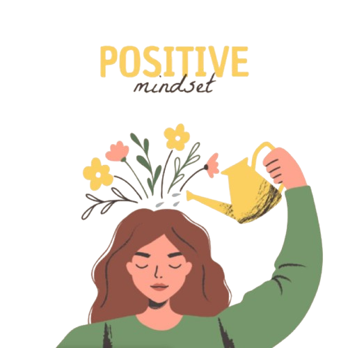

🌱 Mindset
Cara berpikir dan keyakinan seseorang dalam memandang diri sendiri, tantangan, kegagalan, dan peluang. Pola pikir yang tepat membantu kamu berkembang dan berani mencoba hal baru.
Jenis-jenis Mindset
Growth Mindset
Klik untuk detailFixed Mindset
Klik untuk detail

Positive Mindset
Klik untuk detailMindset Check
Mindset Check adalah fitur refleksi diri yang membantu pengguna mengenali pola pikir dalam menghadapi tantangan dan proses belajar.
⚠️ Fitur ini bersifat reflektif dan edukatif, bukan tes psikologis.
🎯
Mindset Check
Section
Mindset Check
Section